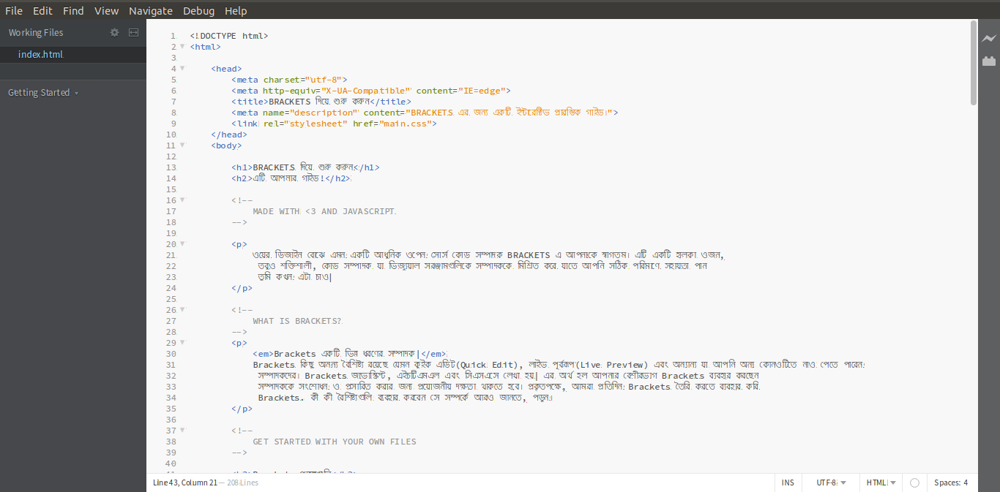

ওয়েব ডিজাইন বোঝে এমন একটি আধুনিক ওপেন সোর্স কোড সম্পাদক BRACKETS এ আপনাকে স্বাগতম। এটি একটি হালকা ওজন, তবুও শক্তিশালী, কোড সম্পাদক যা ভিজ্যুয়াল সরঞ্জামগুলিকে সম্পাদককে মিশ্রিত করে যাতে আপনি সঠিক পরিমাণে সহায়তা পান তুমি কখন এটা চাও|
Brackets একটি ভিন্ন ধরণের সম্পাদক| Brackets কিছু অনন্য বৈশিষ্ট্য রয়েছে যেমন কুইক এডিট(Quick Edit), লাইভ পূর্বরূপ(Live Preview) এবং অন্যান্য যা আপনি অন্য কোনওটিতে নাও পেতে পারেন সম্পাদকদের। Brackets জাভাস্ক্রিপ্ট, এইচটিএমএল এবং সিএসএসে লেখা হয়| এর অর্থ হল আপনার বেশীরভাগ Brackets ব্যবহার করছেন সম্পাদককে সংশোধন ও প্রসারিত করার জন্য প্রয়োজনীয় দক্ষতা থাকতে হবে। প্রকৃতপক্ষে, আমরা প্রতিদিন Brackets তৈরি করতে ব্যবহার করি Brackets. কী কী বৈশিষ্ট্যগুলি ব্যবহার করবেন সে সম্পর্কে আরও জানতে, পড়ুন।
Brackets ব্যবহার করে আপনার নিজস্ব কোড সম্পাদনা করার জন্য, আপনি কেবল আপনার ফাইলযুক্ত ফোল্ডারটি খুলতে পারেন। Brackets বর্তমানে উন্মুক্ত ফোল্ডারটিকে "প্রকল্প" হিসাবে গণ্য করে; কোড ইঙ্গিত, লাইভ পূর্বরূপ এবং এর মত বৈশিষ্ট্যগুলি দ্রুত সম্পাদনা কেবলমাত্র বর্তমানে খোলা ফোল্ডারের মধ্যেই ফাইলগুলি ব্যবহার করে।
আপনি একবার এই নমুনা প্রকল্পটি থেকে বেরিয়ে আসতে এবং নিজের কোড সম্পাদনা করার জন্য প্রস্তুত হয়ে গেলে আপনি ড্রপডাউনটি ব্যবহার করতে পারেন ফোল্ডারগুলি স্যুইচ করতে বাম দিকের বারে এখনই, ড্রপডাউনটি "শুরু করা" বলছে - এটাই আপনি এখন খুঁজছেন ফাইল ধারণকারী ফোল্ডার। ড্রপডাউনটিতে ক্লিক করুন এবং "ফোল্ডারটি খুলুন ..." নির্বাচন করুন আপনার নিজের ফোল্ডারটি খুলতে। আপনি এরপরে আগে যে ফোল্ডারগুলি খোলেন তাতে ফিরে যাওয়ার জন্য আপনি ড্রপডাউনটি পরে ব্যবহার করতে পারেন নমুনা প্রকল্প।দস্তাবেজগুলির মধ্যে আর কোনও পরিবর্তন নেই এবং আপনার প্রসঙ্গ হারাবে। এইচটিএমএল সম্পাদনা করার সময়, ব্যবহার করুন Cmd / Ctrl + E শর্টকাট একটি দ্রুত ইনলাইন সম্পাদক খোলার জন্য যা সম্পর্কিত সমস্ত সিএসএস প্রদর্শন করে। আপনার সিএসএসে একটি টুইট করুন, ESC টিপুন এবং আপনি এইচটিএমএল সম্পাদনা করতে ফিরে এসেছেন বা কেবল ছেড়ে দিন সিএসএসের বিধিগুলি খোলে এবং তারা আপনার এইচটিএমএল সম্পাদকের অংশ হয়ে যাবে। আপনি যদি ESC এর বাইরে যান দ্রুত ইনলাইন সম্পাদক, তারা সকলেই ভেঙে পড়বে। কুইক এডিট আরও কম এবং সংজ্ঞায়িত নিয়মগুলিও খুঁজে পাবে নেস্টেড বিধি সহ এসসিএসএস ফাইল।
এটি কর্মে দেখতে চান? আপনার কার্সার উপরে >> ট্যাগে রাখুন এবং টিপুন সিএমডি / সিটিআরএল + ই । উপরে সিএসএসের নিয়মটি দেখিয়ে আপনার উপরে একটি সিএসএস দ্রুত সম্পাদক দেখা উচিত এটি প্রযোজ্য দ্রুত সম্পাদনা ক্লাস এবং আইডি বৈশিষ্ট্যগুলিতেও কাজ করে। আপনি এটি আপনার সাথে ব্যবহার করতে পারেন কম এবং এসসিএসএস ফাইলও। আপনি একইভাবে নতুন নিয়ম তৈরি করতে পারেন। উপরের -> ট্যাগগুলির মধ্যে একটিতে ক্লিক করুন এবং টিপুন সিএমডি / সিটিআরএল + ই । এখনই এটির জন্য কোনও নিয়ম নেই, তবে আপনি নতুন বিধি ক্লিক করতে পারেন জন্য একটি নতুন নিয়ম যুক্ত বোতাম . আপনি অন্য জিনিসগুলি সম্পাদনা করতে একই শর্টকাট ব্যবহার করতে পারেন - যেমন জাভাস্ক্রিপ্টে ফাংশন, রঙ এবং অ্যানিমেশন টাইমিং ফাংশন - এবং আমরা সর্বদা আরও বেশি সময় জুড়ে থাকি।
আপাতত ইনলাইন সম্পাদকদের নেস্ট করা যাবে না, সুতরাং আপনি কেবল কার্সার করার সময় দ্রুত সম্পাদনা ব্যবহার করতে পারেন একটি "পূর্ণ আকার" সম্পাদক এ।
আপনি জানেন যে "সংরক্ষণ / পুনরায় লোড নাচ" আমরা বছরের পর বছর ধরে করে আসছি? আপনি যেখানে এই পরিবর্তনগুলি করেন আপনার সম্পাদক, সংরক্ষণ করুন, ব্রাউজারে স্যুইচ করুন এবং এরপরে ফলাফলটি দেখতে রিফ্রেশ করুন? Brackets সহ, আপনাকে সেই নাচ করতে হবে না।
Bracketsগুলি আপনার স্থানীয় ব্রাউজারে একটি লাইভ সংযোগ খুলবে এবং এইচটিএমএল এবং সিএসএস আপডেটগুলি আপনাকে ধাক্কা দেবে টাইপ করুন! আপনি ইতিমধ্যে ব্রাউজার-ভিত্তিক সরঞ্জামগুলির সাথে আজও এরকম কিছু করছেন তবে Brackets দিয়ে with চূড়ান্ত কোডটি আবার সম্পাদকের কাছে অনুলিপি করা ও পেস্ট করার দরকার নেই। আপনার কোডটি চালায় ব্রাউজার, কিন্তু আপনার সম্পাদক মধ্যে বাস!
এইচটিএমএল এবং সিএসএসে আপনার পরিবর্তনগুলি পৃষ্ঠায় কীভাবে প্রভাব ফেলবে তা Bracketsগুলি দেখতে সহজ করে তোলে। যখন আপনার কার্সার সিএসএসের নিয়মে রয়েছে, Bracketsগুলি ব্রাউজারে সমস্ত প্রভাবিত উপাদান হাইলাইট করবে। একইভাবে, সম্পাদনা করার সময় একটি এইচটিএমএল ফাইল, Brackets ব্রাউজারে সম্পর্কিত এইচটিএমএল উপাদানগুলি হাইলাইট করবে।
যদি আপনি গুগল ক্রোম ইনস্টল করেন তবে আপনি নিজে চেষ্টা করে দেখতে পারেন। বজ্রপাতের উপর ক্লিক করুন আপনার Brackets উইন্ডোর উপরের ডানদিকে কোণায় আইকন বা Cmd / Ctrl + Alt + P টিপুন। কখন সরাসরি প্রিভিউ একটি এইচটিএমএল ডকুমেন্টে সক্ষম করা হয়েছে, সমস্ত লিঙ্কযুক্ত সিএসএস নথিগুলি রিয়েল-টাইমে সম্পাদনা করা যেতে পারে। যখন Bracketsগুলি আপনার ব্রাউজারে কোনও সংযোগ স্থাপন করে তখন আইকনটি ধূসর থেকে স্বর্ণে পরিবর্তিত হবে। এখন, উপরের -> ট্যাগে আপনার কার্সারটি রাখুন। প্রদর্শিত নীল হাইলাইট লক্ষ্য করুন ক্রোমে চিত্রের চারপাশে। এরপরে, সংজ্ঞায়িত সিএসএস বিধিগুলি খুলতে Cmd / Ctrl + E ব্যবহার করুন। সীমানার আকার 10px থেকে 20px এ পরিবর্তন করতে বা পটভূমি পরিবর্তন করার চেষ্টা করুন "স্বচ্ছ" থেকে "হটপিংক" পর্যন্ত রঙ। আপনার যদি Brackets এবং আপনার ব্রাউজার পাশাপাশি থাকে, আপনি আপনার পরিবর্তনগুলি আপনার ব্রাউজারে তাত্ক্ষণিকভাবে প্রতিবিম্বিত হবে। ঠিক আছে তো?আজ, Bracketsগুলি কেবলমাত্র এইচটিএমএল এবং সিএসএসের জন্য লাইভ পূর্বরূপ সমর্থন করে। তবে, বর্তমান সংস্করণে, এতে পরিবর্তন হয় changes যখন আপনি সংরক্ষণ করবেন তখন জাভাস্ক্রিপ্ট ফাইলগুলি স্বয়ংক্রিয়ভাবে পুনরায় লোড হবে। আমরা বর্তমানে লাইভ পূর্বরূপে কাজ করছি জাভাস্ক্রিপ্ট জন্য সমর্থন। লাইভ পূর্বরূপগুলি কেবল গুগল ক্রোম দিয়েই সম্ভব, তবে আমরা আশা করি ভবিষ্যতে সমস্ত বড় ব্রাউজারে এই কার্যকারিতা আনতে।
For those of us who haven't yet memorized the color equivalents for HEX or RGB values, Brackets makes it quick and easy to see exactly what color is being used. In either CSS or HTML, simply hover over any color value or gradient and Brackets will display a preview of that color/gradient automatically. The same goes for images: simply hover over the image link in the Brackets editor and it will display a thumbnail preview of that image.
নিজের জন্য কুইক ভিউ চেষ্টা করে দেখতে, আপনার কার্সারটিকে এর শীর্ষে -> ট্যাগে রাখুন ডকুমেন্ট এবং একটি সিএসএস দ্রুত সম্পাদক খুলতে Cmd / Ctrl + E টিপুন। এখন কেবল যেকোনটির উপর ঘুরে দেখুন সিএসএসের মধ্যে রঙের মান। আপনি এটি একটি সিএসএস দ্রুত সম্পাদক খোলার মাধ্যমে গ্রেডিয়েন্টগুলিতে ক্রিয়াতেও দেখতে পারেন -> ট্যাগে এবং কোনও পটভূমি চিত্রের মানকে ঘিরে। ছবিটি চেষ্টা করার জন্য পূর্বরূপ, এই দস্তাবেজের অন্তর্ভুক্ত স্ক্রিনশট চিত্রের উপর আপনার কার্সার রাখুন।ব্র্যাককেটে তৈরি হওয়া সমস্ত ধার্মিকতা ছাড়াও আমাদের বৃহত এবং বর্ধমান সম্প্রদায় এক্সটেনশন বিকাশকারীরা শত শত এক্সটেনশান তৈরি করেছেন যা কার্যকর কার্যকারিতা যুক্ত করে। যদি আছে আপনার প্রয়োজন এমন কিছু যা ব্র্যাকেটগুলি সরবরাহ করে না, তার চেয়ে বেশি সম্ভবত কেউ এক্সটেনশন তৈরি করেছেন এটা। ব্রাউজ বা উপলভ্য এক্সটেনশনের তালিকা অনুসন্ধান করতে, ফাইল> এক্সটেনশন চয়ন করুন পরিচালক… এবং "উপলভ্য" ট্যাবে ক্লিক করুন। আপনি যখন চান একটি এক্সটেনশন খুঁজে পান, কেবল ক্লিক করুন পাশের "ইনস্টল" বোতামটি।
Brackets একটি মুক্ত উত্স প্রকল্প। বিশ্বজুড়ে ওয়েব বিকাশকারীরা তৈরিতে অবদান রাখছেন একটি ভাল কোড সম্পাদক। আরও অনেকগুলি এক্সটেনশনগুলি তৈরি করছে যা Bracketsগুলির সক্ষমতা প্রসারিত করে। আপনি কী ভাবেন তা আমাদের জানান, আপনার ধারণাগুলি ভাগ করুন বা প্রকল্পে সরাসরি অবদান রাখুন।